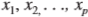
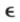
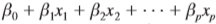
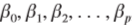
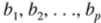

ECUACIÓN DE REGRESIÓN MÚLTIPLE

El análisis de regresión múltiple estudia la relación de una variable dependiente con dos o más variables independientes. Para denotar el número de variables independientes se suele usar p.
Los conceptos de modelo de regresión y ecuación de regresión vistos en el capítulo previo, son aplicables en el caso de la regresión múltiple. Ala ecuación que describe cómo está relacionada la variable dependiente y con las variables independientes  se le conoce como modelo de regresión múltiple. Se supone que el modelo de regresión múltiple toma la forma siguiente
Uno de los supuestos es que la media o valor esperado de  es cero. Una consecuencia de este supuesto es que la media o valor esperado de y, que se denota E(y), es igual a . A la ecuación que describe cómo está relacionada la media de y con se le conoce como ecuacion de regresión múltiple.
Si se conocieran los valores de , se podría usar la ecuación de regresión múltiple para calcular la media de las y para valores dados de . Desafortudamente, los valores de estos parámetros no suelen conocerse, es necesario estimarlos a partir de datos muestrales. Para calcular los valores de los estadísticos muestrales  que se usan como estimadores puntuales de los parámetros de se emplea una muestra aleatoria simple. Con los estadísticos muestrales se obtiene la siguiente ecuación de regresión múltiple estimada.